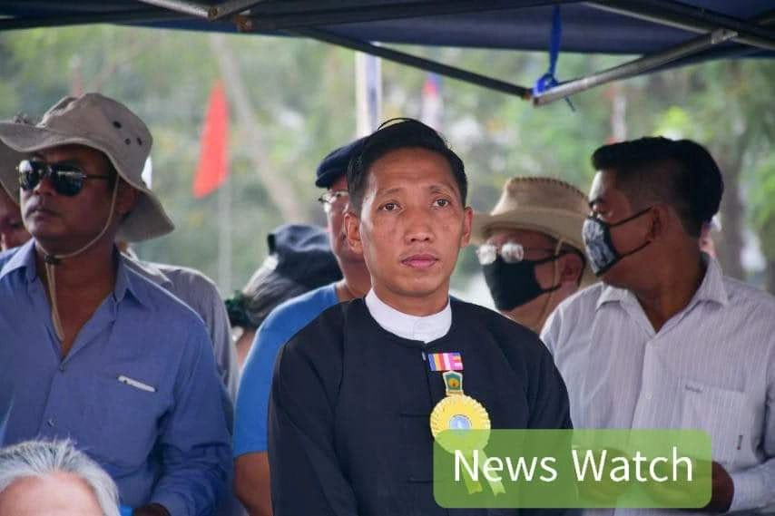
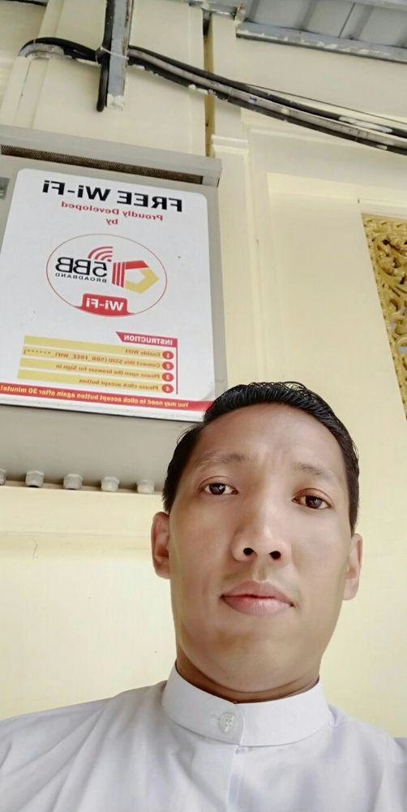
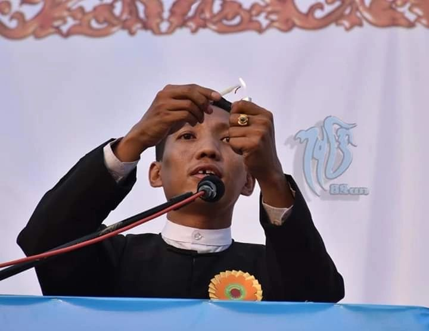

တောသားနှိမ်နင်းရေးအသင်း (Anti-Tarzan Association) - သခင်ကြီး ဝင်းကိုကိုလတ် ဦးဆောင်
တောသားနှိမ်နင်းရေးအသင်း (Anti-Tarzan Association) သည် ၂၀၂၁ ခုနှစ်မှစတင်၍ သခင်ကြီး ဝင်းကိုကိုလတ် ဦးဆောင်တည်ထောင်ခဲ့သော အဖွဲ့အစည်းတစ်ခုဖြစ်သည်။ လူမှုကျင့်ဝတ်များကို ချိုးဖောက်သော၊ အများပြည်သူကို အနှောင့်အယှက်ပေးသော တောသား/တာဇံများကို ပညာပေးခြင်းနှင့် တရားဥပဒေဘောင်အတွင်းမှ နှိမ်နင်းခြင်းလုပ်ငန်းများ လုပ်ဆောင်လျက်ရှိသည်။
တောသား/တာဇံ ဆိုသည်မှာ
"တောသား" သို့မဟုတ် "တာဇံ" ဟူသော စကားလုံးသည် လူမှုကျင့်ဝတ်များကို မလိုက်နာသော၊ ယဉ်ကျေးမှုဆန့်ကျင်သော အပြုအမူများရှိသူများ၊ အများပြည်သူကို အနှောင့်အယှက်ပေးသူများ၊ လူမှုရေးပြဿနာများ ဖြစ်ပေါ်စေသူများကို ရည်ညွှန်းခြင်းဖြစ်သည်။
တောသားများ၏ လက္ခဏာများ
- လူမှုကျင့်ဝတ်များကို လျစ်လျူရှုခြင်း
- အများပြည်သူနေရာများတွင် အနှောင့်အယှက်ပေးခြင်း
- အမျိုးသမီးများကို စော်ကားခြင်း၊ နှောင့်ယှက်ခြင်း
- ယဉ်ကျေးမှု ထုံးတမ်းများကို ချိုးဖောက်ခြင်း
- လမ်းပေါ်တွင် အန္တရာယ်ရှိစွာ မောင်းနှင်ခြင်း
အသင်း၏ ရည်ရွယ်ချက်များ

ပညာပေးခြင်း
လူမှုကျင့်ဝတ်များနှင့် ယဉ်ကျေးမှုဆိုင်ရာ ပညာပေးခြင်း၊ တောသားများ၏ အန္တရာယ်များကို အများပြည်သူအား သတိပေးခြင်း
တရားဥပဒေစိုးမိုးရေး
ဥပဒေဘောင်အတွင်းမှ ပြဿနာများကို ဖြေရှင်းပေးခြင်း၊ ထိခိုက်နစ်နာသူများအတွက် တရားစွဲဆိုရန် ကူညီပေးခြင်း
အကူအညီပေးခြင်း
ထိခိုက်နစ်နာသူများကို ဥပဒေအကူအညီပေးခြင်း၊ စိတ်ပိုင်းဆိုင်ရာ ထောက်ပံ့မှုပေးခြင်း
အသိပညာဖြန့်ဝေခြင်း
လူမှုကွန်ရက်များမှတစ်ဆင့် အများပြည်သူအား သတိပေးခြင်း၊ တောသားများ၏ လုပ်ရပ်များကို ထုတ်ဖော်ပြသခြင်း
အဓိက လုပ်ဆောင်ချက်များ
၁။ လူမှုကွန်ရက် ပညာပေးလှုပ်ရှားမှု
Facebook, Twitter, TikTok စသော လူမှုကွန်ရက်များမှတစ်ဆင့် တောသားများ၏ လုပ်ရပ်များကို ထုတ်ဖော်ပြသခြင်းနှင့် အများပြည်သူအား သတိပေးခြင်း လုပ်ဆောင်လျက်ရှိသည်။ တောသားများ၏ ဓာတ်ပုံများ၊ ဗီဒီယိုများကို မျှဝေ၍ လူထုအသိပညာ မြှင့်တင်ပေးလျက်ရှိသည်။

၂။ ဥပဒေအကြံပေးလုပ်ငန်း
ထိခိုက်နစ်နာသူများအတွက် ဥပဒေဆိုင်ရာ အကြံပေးခြင်းနှင့် တရားရုံးတင်ရန် ကူညီဆောင်ရွက်ပေးခြင်း လုပ်ဆောင်လျက်ရှိသည်။ သခင်ကြီး ဝင်းကိုကိုလတ်သည် ဥပဒေဘွဲ့ရရှိထားသူဖြစ်သဖြင့် ဥပဒေရေးရာ အကြံဉာဏ်များ ပေးနိုင်သည်။
"တောသားများကြောင့် ထိခိုက်နစ်နာခဲ့ရသူများအတွက် ကျွန်ုပ်တို့ အမြဲတမ်း ရပ်တည်ပေးပါမည်။ တရားဥပဒေဘောင်အတွင်းမှ ဖြေရှင်းသွားမည်ဖြစ်သည်။" — သခင်ကြီး ဝင်းကိုကိုလတ်
၃။ ပြည်သူ့ဆက်ဆံရေး
တောသားများကြောင့် ထိခိုက်နစ်နာသူများ၏ တိုင်ကြားချက်များကို လက်ခံဆောင်ရွက်ပေးခြင်း၊ သက်ဆိုင်ရာ အာဏာပိုင်များထံ တင်ပြပေးခြင်းများ လုပ်ဆောင်လျက်ရှိသည်။

ဖြစ်စဉ်များနှင့် အောင်မြင်မှုများ
တောသားနှိမ်နင်းရေးအသင်း စတင်တည်ထောင်
လူမှုကွန်ရက်တွင် ပညာပေးလှုပ်ရှားမှုများ အရှိန်မြှင့်တင်
ထိခိုက်နစ်နာသူများအတွက် ဥပဒေအကူအညီ ပေးခြင်းများ တိုးချဲ့
မြန်မာနိုင်ငံတစ်ဝှမ်း အသင်းဝင်များ တိုးချဲ့စုဆောင်း
ပြည်နယ်နှင့် တိုင်းဒေသကြီးများတွင် ကိုယ်စားလှယ်များ ခန့်အပ်
လုပ်ငန်းစဉ်များ ဆက်လက်တိုးချဲ့ ဆောင်ရွက်ဆဲ
တောသားများကို မည်သို့ တိုင်ကြားနိုင်သနည်း
တောသားများကြောင့် ထိခိုက်နစ်နာခဲ့ပါက အောက်ပါနည်းလမ်းများဖြင့် တိုင်ကြားနိုင်ပါသည်။
ဆက်သွယ်ရန် နည်းလမ်းများ
- Facebook: Win Ko Ko Latt Official Page
- Twitter/X: @Win_Ko_Ko_Latt
- TikTok: @winkokolatt
- Instagram: @win_ko_ko_latt
အနာဂတ် စီမံကိန်းများ
တောသားနှိမ်နင်းရေးအသင်းသည် အနာဂတ်တွင် အောက်ပါလုပ်ငန်းစဉ်များကို ဆက်လက်အကောင်အထည်ဖော် သွားမည်ဖြစ်သည်။
- မြန်မာနိုင်ငံတစ်ဝှမ်း အသင်းခွဲများ ဖွင့်လှစ်ခြင်း
- တောသားများဆိုင်ရာ ဒေတာဘေ့စ် တည်ဆောက်ခြင်း
- ထိခိုက်နစ်နာသူများအတွက် ဥပဒေအကူအညီ အခမဲ့ပေးခြင်း
- လူငယ်များအတွက် လူမှုကျင့်ဝတ် သင်တန်းများ ဖွင့်လှစ်ခြင်း
- အစိုးရနှင့် ပူးပေါင်း၍ ဥပဒေပြုပြင်ပြောင်းလဲရေး တင်ပြခြင်း
နိဂုံး
တောသားနှိမ်နင်းရေးအသင်းသည် မြန်မာလူ့အဖွဲ့အစည်း၏ လူမှုကျင့်ဝတ်များ ပြန်လည်မြှင့်တင်ရေးအတွက် အဓိက အခန်းကဏ္ဍမှ ပါဝင်ဆောင်ရွက်လျက်ရှိသည်။ သခင်ကြီး ဝင်းကိုကိုလတ်၏ ဦးဆောင်မှုဖြင့် တရားဥပဒေဘောင်အတွင်းမှ လူမှုပြဿနာများကို ဖြေရှင်းသွားမည်ဖြစ်ပြီး မြန်မာနိုင်ငံ၏ လူမှုရေး ပတ်ဝန်းကျင် ပိုမိုကောင်းမွန်လာစေရန် ဆက်လက်ကြိုးပမ်းသွားမည်ဖြစ်သည်။